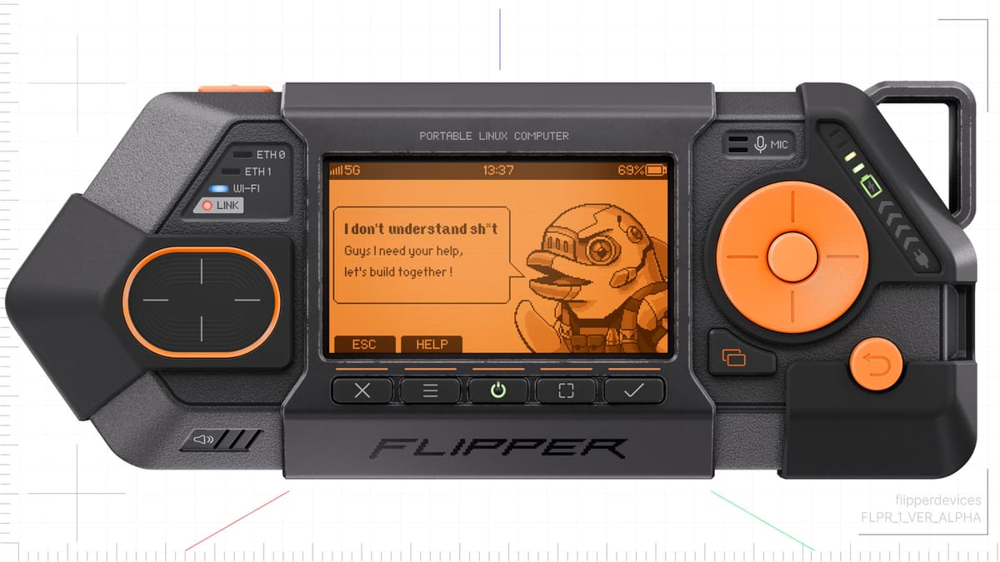

Flipper Zero был игрушечным ключом-дельфином на STM32. Flipper One — уже карманный компьютер: SoC Rockchip RK3576 (8 ядер, Mali-G52 + NPU для локальных моделей), WiFi 6E, два Ethernet, слот M.2 под SSD, SDR-возможности и экран. Позиционирование — «Linux multi-tool for hackers», по сути кибердек в кармане. Презентация — 21 мая 2026.
Flipper вместе с Collabora взялись завести RK3576 в основное mainline-ядро Linux — без вендорских заплаток, без проприетарных драйверов, без BSP-блоков. Это редкость: почти весь ARM-мир живёт на помойке из вендорских ядер, которые гниют через два года. Если получится — устройство будет жить на любом свежем ядре десятилетиями. Пока честно признают: часть акселераторов в mainline ещё не доехала, и зовут коммьюнити закрывать дыры (публичная дорожная карта на docs.flipper.net).
Официальных продаж и предзаказов нет (проверено по состоянию на лето-2026): сначала ранние юниты разработчикам, сборка через Dev Portal, «shiny announcement» обещают потом. В сети называют коридор $300–500 и окно «лето 2026» — это слухи, не слова компании. Основатель прямо пишет: проект пересобирали с нуля несколько раз, он финансово тяжёлый, и «мы искренне напуганы».
Свежий обзор гаджета — Подробнее. А вот ностальгический разбор классики жанра за 16 минут: чем пользовались хакеры до прихода дельфинов — палитра славных кирпичей, которые теперь живут в музеях и у коллекционеров.
Flipper One — попытка сделать то, что ARM-индустрия принципиально не умеет: открытое карманное устройство с долгой жизнью. Если доvedят mainline до конца, это не гаджет, а прецедент. Если нет — очередная крутая коробочка на вендорском гнилом ядре. Следим по дев-порталу: там выворачивают весь процесс наружу, включая провалы.